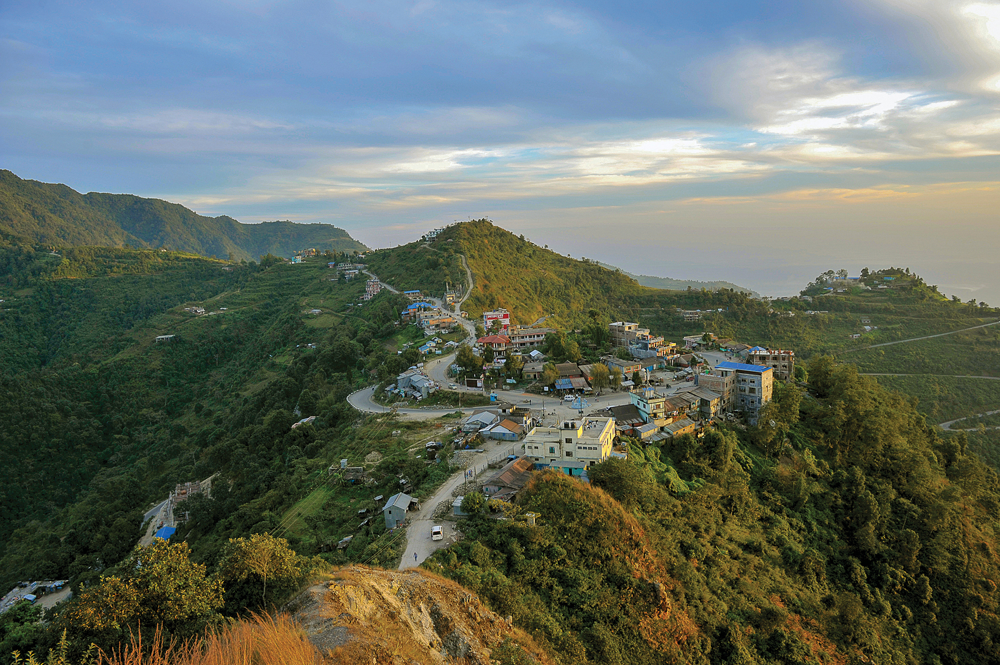

Discover Nepal's Major Cities
Nepal is a land of diverse cultures, landscapes, and historical monuments. Explore the unique cities that showcase the rich heritage and natural beauty of this amazing country.
Kathmandu
Explore the capital of Nepal, a vibrant city full of history, culture, and religious significance.
Learn More
Chitwan
Chitwan is famous for its national park and wildlife, including the endangered one-horned rhinoceros.
Learn More

Dharan
Dharan is a vibrant city in eastern Nepal, known for its diverse community and beautiful scenery.
Learn More